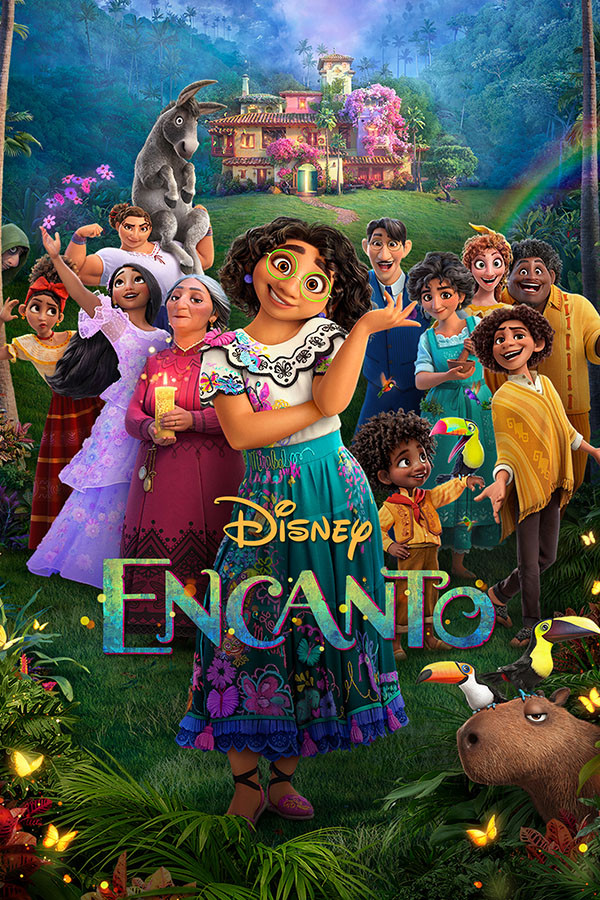

Passatempos
Desenhos & artesanato
Desde de pequena gosto muito de fazer desenhos, apesar de ultimamente não desenhar com frequência. Recentemente comecei a me interessar em artesanato, principalmente de fazer peças com biscuit.
Programação
Apesar das dificuldades e de ter algumas inseguranças, programar é uma coisa que gosto de fazer desde que tive o primeiro contato. Hoje em dia, busco sempre melhorar minhas habilidades.

Cozinhar
Durante a pandemia, descobri que cozinhar é bem legal e desde então tenho me arriscado nisso (e nem sempre dá certo).

A princesa e o sapo (2009)
Moana (2016)

Encanto (2021)
Filmes da disney
Sou apaixonada por filmes da disney/pixar, principalmente pelos de princesa (já vi moana 7 vezes). Assistir essas animações faz a minha criança interior muito feliz.